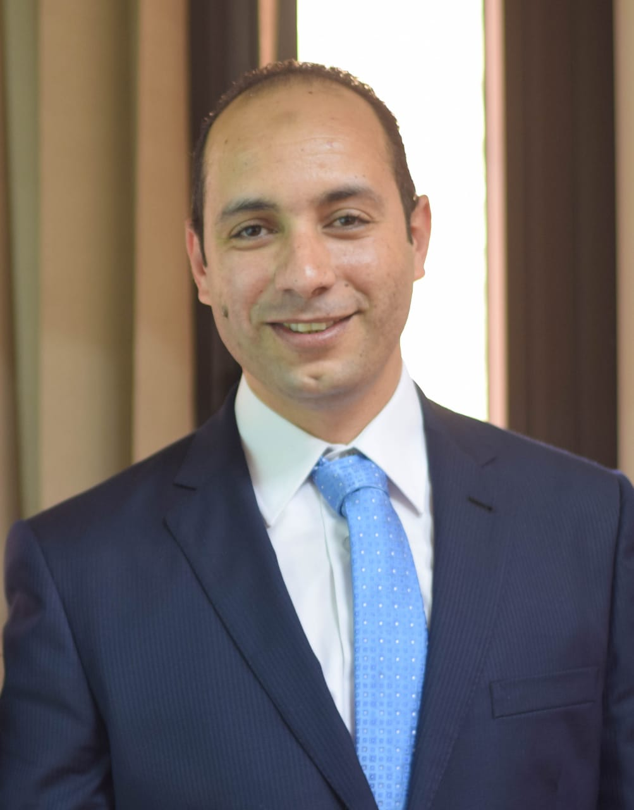
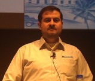
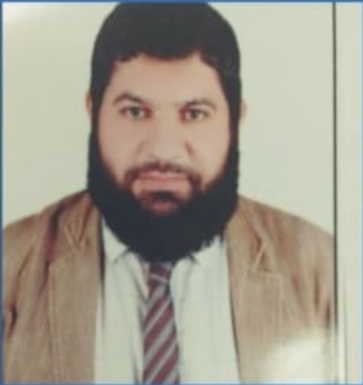

في قسم علوم الحاسب يكون الطالب بحاجه الى أن يكون لدية معرفة بقدر كبير من الرياضيات والتفاضل والجبر الخطي، في هذا القسم ستتعلم وتمارس كثيراً من البرمجة بمختلف اللغات، اذا كنت لا تحب البرمجة فهذا ليس المجال المناسب لك، بجانب البرمجة فإن الدراسة ستتركز على كثير من الموضوعات العملية وكثير من النظريات، ستدرس الكثير من الخوارزميات بجانب البرمجة، وستتعلم طرقاً مختلفة للتفكير يستحيل أن يصل اليها المطور العادي الذي لم يدرس مجال علوم الحاسب، فليس المهم كتابة برنامج، ولكن المهم هو طريقة كتابته وطريقة تشغيله. يركز هذا القسم على مهام تقنيه دقيقة ومتخصصة ويبتعد عن الجانب الإداري، فالدارس لا يشغل نفسه بعملية إدارة المشروع ولكن يركز على انجاز المهام التقنية الموكلة إليه بإستخدام خوارزميات وطرق رياضية وافكار خارج الصندوق وكثير من البرمجة. ويقوم الدارس بتقييم
الطرق التي استخدمها في الحلول والوقوف على
تكلفتها ودرجة تعقيدها.
قسم تكنولوجيا المعلومات

أ.م.د فريد علي
رئيس قسم تكنولوجيا المعلومات
عن القسم
هذا المجال لا يحتاج هذا الكم الهائل من المعرفة بالرياضيات وفروعها مثل الحال بمجال علوم الحاسب . ويركز بعض الشيء على استخدام التكنولوجيا وادارتها بالشكل الامثل في هذا المجال ستستخدم البرمجة ولكن بطريقة عملية فقط، وستدرس بعض الخوارزميات ولكن ليس بنفس المستوى الموجود في تخصص علوم الحاسب ، ففي هذا المجال ستدرس فقط الخوارزميات التي تحتاجها من أجل توظيف التكنولوجيا بالشكل الامثل ستكتب برامج لحفظ البيانات في قواعد بيانات موجودة على خوادم متصلة بشبكة المعلومات وستتمكن من تصميم وبرمجة مواقع تسمح للمستخدمين بالتسجيل والتفاعل ، في هذا المجال تستخدم بعض الخوارزميات ولكن المهم هو انجاز المهام فمثلا الهدف هو ترتيب مجموعة من البيانات ولكن يمكن استخدام اي خوارزم جاهز لترتيبهم ، فالمهم هو انجاز المهام وليس طريقة انجازها بالشكل الامثل . وفي هذا المجال لا يكون التركيز على البرمجة فقط ولكن يكون بشكل أكبر على الشبكات وقواعد البيانات والاستفادة منهم في تطوير المنظومة والبنية التحتية للمؤسسة ، والتركيز فقط على المنظومة التكنولوجية باكملها وتأسيس الشبكات وتهيئة الخوادم وتجهيز
قواعد البيانات والمكتبات والبرمجيات الضرورية.
قسم نظم المعلومات

أ.م.د أحمد بهاء
رئيس قسم نظم المعلومات
عن القسم
هذا المجال يركز اكثر على الادارة ويعلمك عندما تريد انشاء نظام ضخم يستخدم التكنولوجيا ويتعامل مع مئات او آلاف المستخدمين والموظفين فكيف تديره وتخطط له بالشكل الامثل بحيث تستفيد من التكنولوجيا والبرمجيات وتوظفها بالشكل الامثل الذي يضمن زيادة الإنتاجية والكفاءة. في هذا المجال يكون التركيز الأكبر على تصميم وتحليل النظم وكتابة مستندات documentation تشرح التصميم، وتقديم البراهين والدفاعات اللازمة عن التصميم وخصوصا اذا كان بناء النظام الذي نحتاجه سيكلف اموالا باهظة، ستقوم بدراسة مقررات لإدارة المشروعات ، يدرس الملتحق بهذا التخصص بعض لغات البرمجة البسيطة ولكن يركز اكثر على المهام الإدارية، والهدف من دراسة لغات البرمجة هو ان اي مبرمج يحتاج ان يكون مديره على علم بلغات البرمجة ، فالتخطيط والتحليل والتصميم والادارة هم اساس هذا المجال.
قسم الوسائط المتعددة

أ.م.د حسام مفتاح
رئيس قسم الوسائط المتعددة
عن القسم
قسم الوسائط المتعددة هو أحد الأقسام التي توجد
في بعض كليات الحاسبات والذكاء الاصطناعي في مصر يهتم هذا القسم بدراسة وتطوير التقنيات والتطبيقات المتعلقة بالمحتوى المتعدد الوسائط، مثل الصوت والفيديو والرسومات والنص والرسوم المتحركة. يتعلم الطلاب في هذا القسم كيفية تصميم وإنشاء وتحليل وتقييم ونشر المحتوى المتعدد الوسائط باستخدام أحدث الأدوات والمنصات والمعايير. يهدف إلى إعداد خريج قادر على تطبيق علوم الحاسب في إنشاء
وإدارة نظم المعلومات المتعددة الوسائط